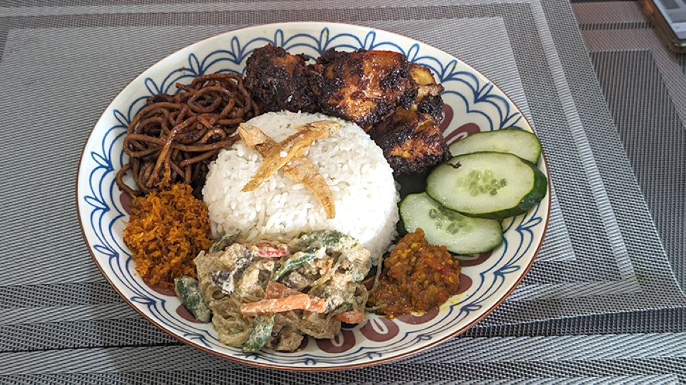
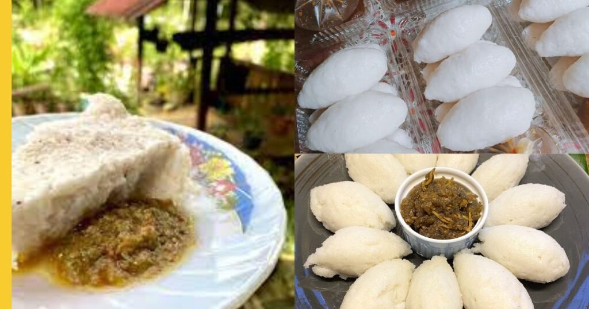
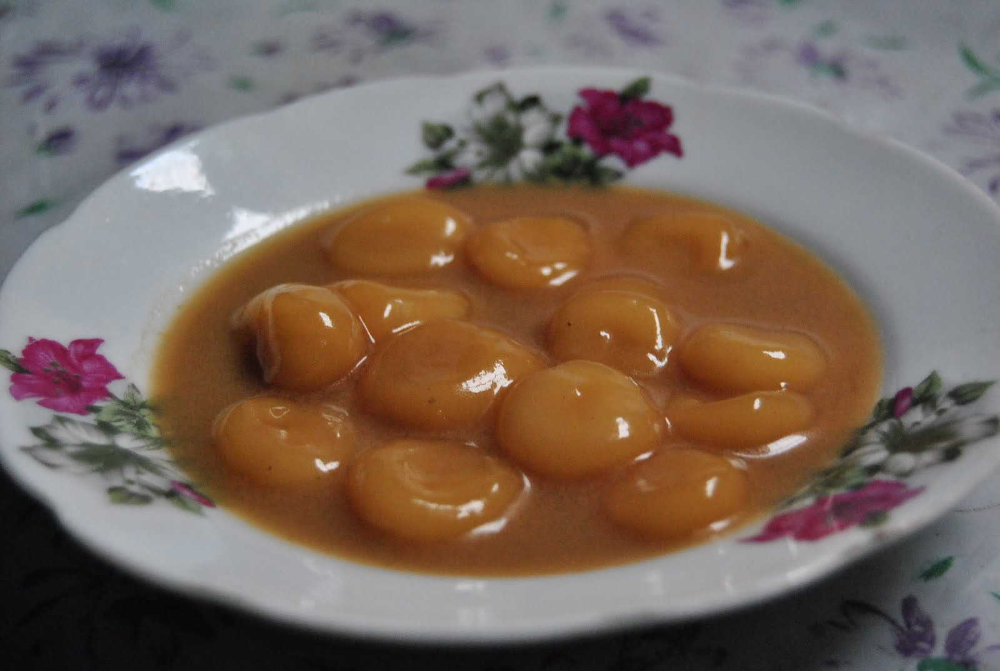

Sungai Besar and the surrounding Sabak Bernam district are home to traditional food influenced by Javanese and Banjar communities.

Nasi Ambeng is a traditional Javanese dish consisting of rice served with various side dishes such as chicken, fried noodles, vegetables and sambal.
It is traditionally shared during family gatherings and community celebrations.

Punten is a traditional Javanese dish made from rice, coconut milk and salt.
The rice is mashed and shaped before being served with spicy sambal. It is commonly enjoyed for breakfast or as a snack.

Wadei Kepeng is a traditional sweet dessert associated with the Banjar community.
It is part of the culinary heritage found in the Sabak Bernam district.
Sabak Bernam is home to communities with Javanese, Banjar and Bugis heritage.
Traditional food, agriculture, fishing and village activities form an important part of the district's identity.
Recipes passed down through generations.
Rice farming and village agricultural activities.
Family gatherings, shared meals and local celebrations.
Watch this Tourism Selangor video introducing the natural beauty and traditional culture of Sabak Bernam.
An internet connection is required to play this video.
Find more information about the district and its local attractions.